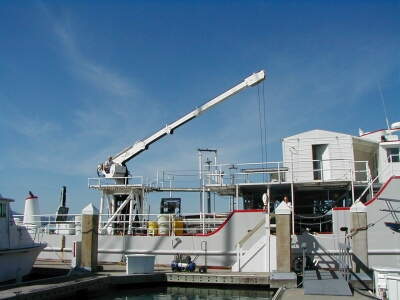
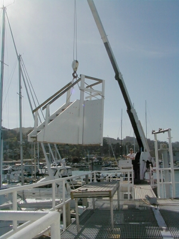

Moving day with the crane

March 21, 2003
When we move the ship, we make use of the crane on board to load and unload.
Captain Case at the controls
Bringing a compressor aboard

Preparing to lift the boarding stairs

Swinging the stairs over the upper deck
Just before lowering the stairs to the
lower deck

Back to the Transquest Home Page
Web site developed by Sarah Rodger, Transquest Crew